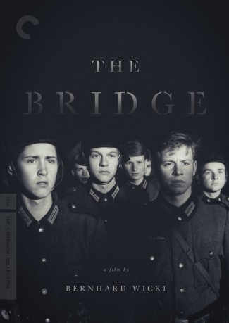
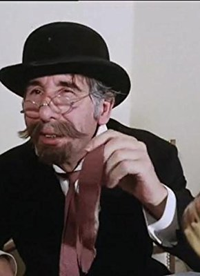

#1676 Die Brücke
Alternativ: Bridge, The (Originaltitel)
Auszeichnungen: für 1 Oscars nominiert 1 GoldenGlobes gewonnen
 
 IMDB-Wertung: 7.8 / 10
IMDB-Wertung: 7.8 / 10  Metascore: 0
Metascore: 0 
Acht noch minderjährige Jugendliche erhalten in den letzten Kriegstagen 1945 den völlig sinnlosen Befehl, ein Brücke bei einer Kleinstadt im Bayerischen Wald vor den anrückenden Amerikanern zu verteidigen. Mit patriotischem Enthusiasmus und Begeisterung glauben sie, ihren Auftrag erfüllen zu müssen. Erst nachdem einer nach dem anderen bei der Verteidigung der Brücke sein Leben lassen muss, wird die Sinnlosigkeit des Befehls offenkundig.
Jahr: 1959
Dauer: 103 Minuten
FSK: 12
Land: West-Deutschland Studio: Deutsche Film HansaTonspuren:
Untertitel:
Auflösung: 1080p (1440x1080) Größe: 8140 MB
Genre: Drama, Krieg
Regisseur: Bernhard Wicki
Drehbuch: Manfred Gregor, Michael Mansfeld, Karl-Wilhelm Vivier, Bernhard Wicki
Soundtrack: Hans-Martin Majewski
Darsteller:
- Peter Fernandez als
 Buck Henry als
Buck Henry als - Folker Bohnet als Hans Scholten
- Fritz Wepper als Albert Mutz
- Michael Hinz als Walter Forst
- Frank Glaubrecht als Jurgen Borchert
- Karl Michael Balzer als Karl Horber
- Volker Lechtenbrink als Klaus Hager
- Günther Hoffmann als Sigi Bernhard
- Cordula Trantow als Franziska
- Wolfgang Stumpf als Stern
- Günter Pfitzmann als Heilmann
- Heinz Spitzner als Fröhlich
- Siegfried Schürenberg als Lt. Colonel
- Ruth Hausmeister als Mrs. Mutz
- Eva Vaitl als Mrs. Borchert
- Edith Schultze-Westrum als Mother Bernhard
- Hans Elwenspoek als Mr. Forst
- Trude Breitschopf als Mrs. Forst
- Klaus Hellmold als Mr. Horber
- Inge Benz als Sigrun
- Til Kiwe als Knight of the Iron Cross
- Edeltraut Elsner als Barbara
- Vicco von Bülow als Stabsfeldwebel
- Georg Lehn als
-  Johannes Buzalski als Wounded Soldier
- Heini Göbel als Feldwebel Verpflegung
- Kurt Habernoll als Unteroffizier
- Herma Hochwarter als Dienstmädchen bei Forst
- Emil Huneck als Zivilist
- Alexander Hunzinger als Gefreiter
- Ira Lewis als
- Hans Oettl als Polizist
- Alfons Teuber als
Datei: X:\1950-1959\Brücke, Die (1959, FSK12, 1440x1080).mkv seit 05.08.2015
Festplatte: HD 1900-1970
 Es gibt insgesamt 141 Filme in der Gruppe '1950-1959'
Es gibt insgesamt 141 Filme in der Gruppe '1950-1959'